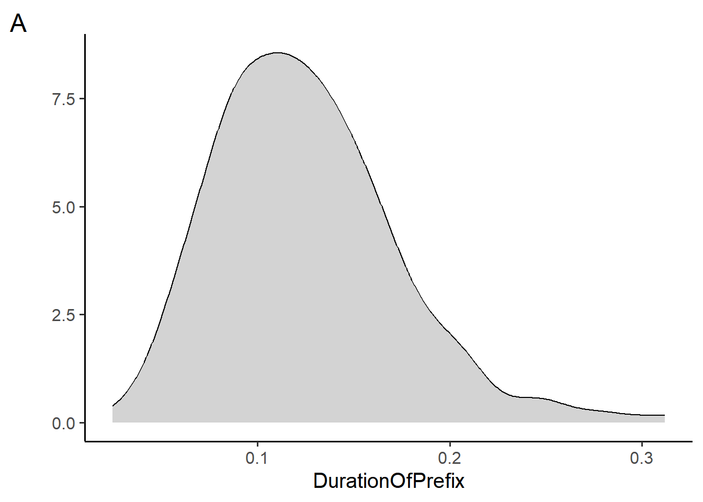
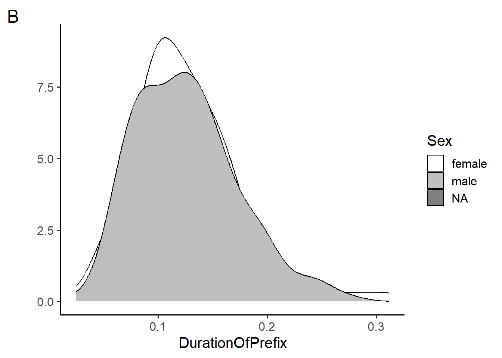
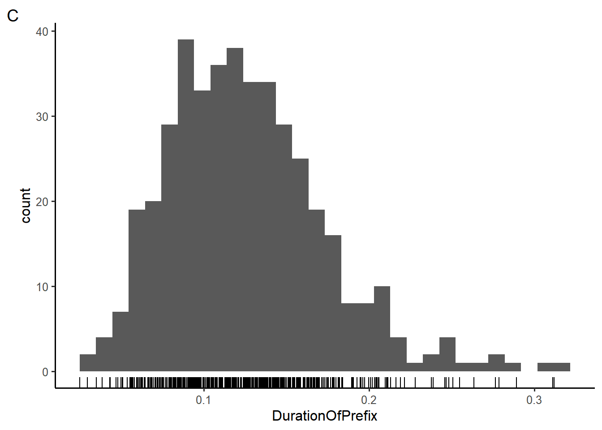
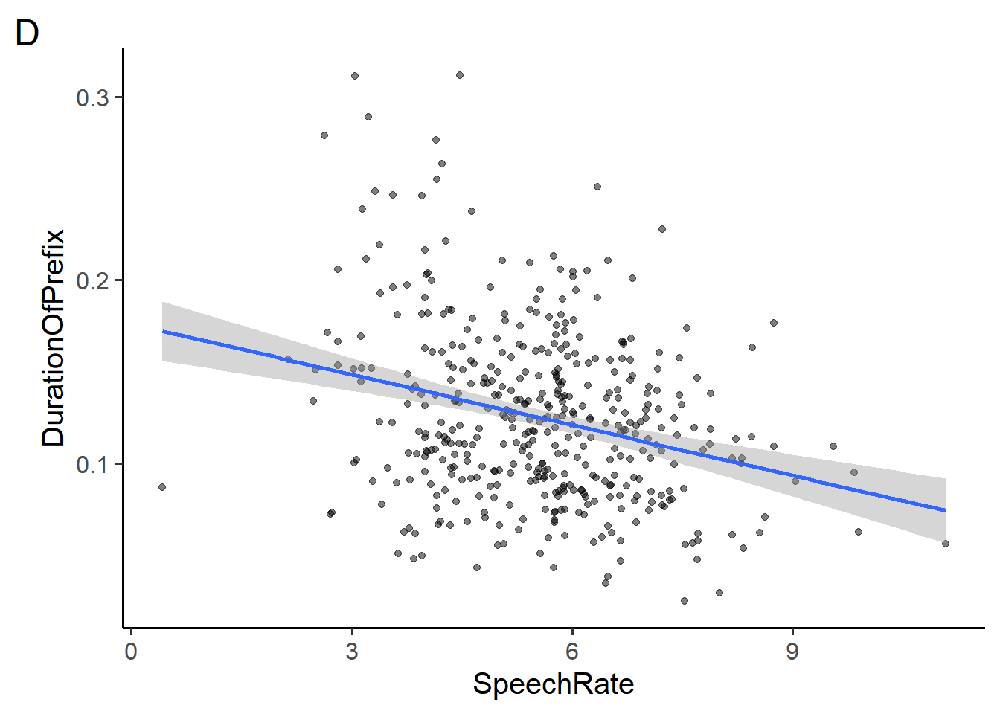
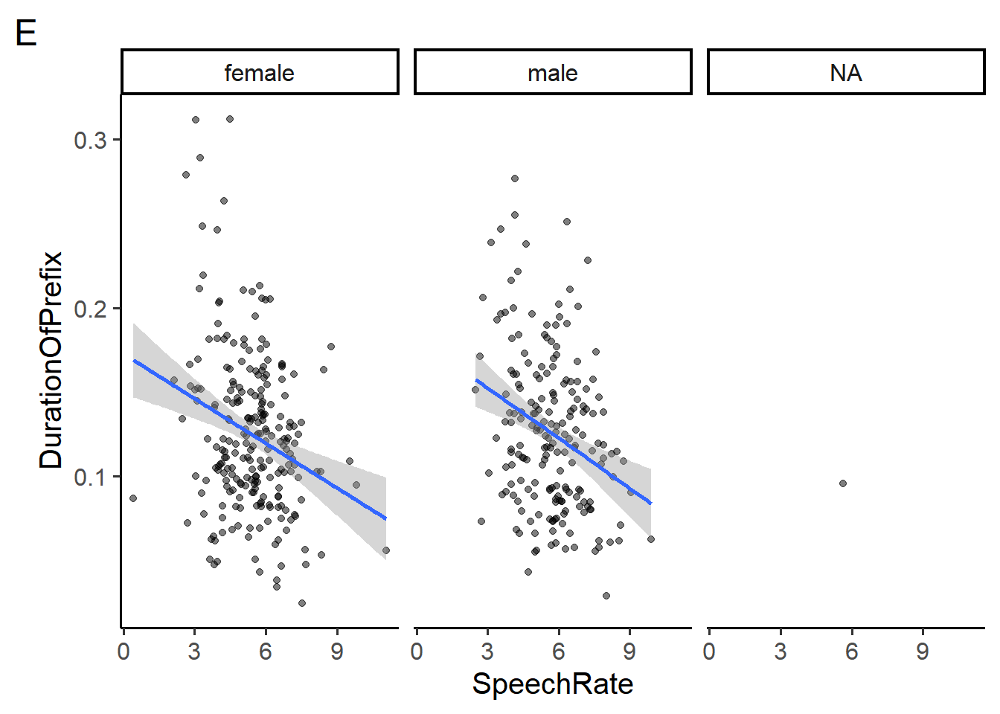
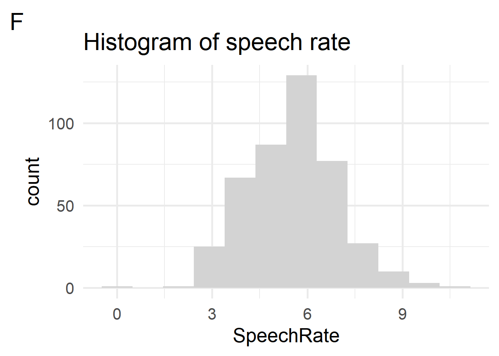

antique age show
1 1 2 a
2 2 3 b
3 3 4 cQuiz 1
Data Science for Studying Language & the Mind
Estimated time: 30 minutes
You may need more time if programming is completely new to you, or less if you have some experience already.
Instructions
- The quiz is closed book/note/computer/phone
- If you need to use the restroom, leave your exam and phone with the TA
- You have 60 minutes to complete the quiz. If you finish early, you may turn in your quiz and leave early
1 R basics: general
Suppose you run the following code. Which command could you run to remove the
yvariable from the current environment? Choose all that apply.x <- 1 + 2 y <- 3 + 4 z <- 0ls(y)rm(list = ls())rm(y)remove(y)
Write an expression that would assign the value
10to the variable namemy_var?Which of the following would install the
praisepackage? Choose all that apply.library(praise)install(praise)install.packages("praise")install.packages(praise)
Suppose you run the following code. Which functions would return the structure of the object you defined? Choose one.
x <- c("bus", "stop")length(x)print(x)str(x)attributes(x)- None of the above
2 R basics: vectors, operations, subsetting
Suppose you run the following code. What will length(x) return? Write your answer in the box below.
x <- 1:5Suppose you run the following code. What will
y > 4return? Write your answer in the box below and show your work.x <- seq(2, 8, by = 2) y <- x[c(-4)]Suppose you run the following code. What will
typeof(x)return?x <- c("true", "false", "true", "false")doubleintegercharacterlogical
Suppose you create the following data frame and assign it to the
dfvariable. What willsum(df$antique)return?- NULL
- Error: no columns include value “antique”
- 6
- 9
- 15
3 Data importing
Which of the following will load the
readrpackage into the current environment? Choose all that apply.library(tidyverse)library(readr)install.packages("tidyverse")install.packages("readr")import(tidyverse)import(readr)
Suppose
print(x)returns the following. What willis.data.frame(x)return? Write your answer in the box below.# A tibble: 4 × 3 x y z <int> <int> <int> 1 1 5 9 2 2 6 10 3 3 7 11 4 4 8 12Suppose you import “junesales.csv”, shown below, with the following code. What would
data$Salereturn? Choose one.Year, Month, Day, Sale 2023, June, 1, 0 2023, June, 2, 1 2023, June, 3, 0 2023, June, 4, 1data <- read_csv("junesales.csv", col_types = list(Sale = col_logical()) )- A
doublevector with values0 1 0 1 - A
logicalvector with valuesFALSE TRUE FALSE TRUE - A double vector with values
NA NA NA NA NULL
- A
Suppose you import a dataset with
readr, but when youprint(data)you notice that theagecolumn was identified ascharacterwhen you were expectingdouble. Given the resulting tibble, which of the following arguments could you include in blank in the code below to solve this problem?# A tibble: 4 × 3 age graduated gpa <chr> <lgl> <dbl> 1 18 FALSE NA 2 na FALSE 3.8 3 25 TRUE 2.9 4 21 TRUE 3.1data <- read_csv("data.csv", ________).drop = NAskip = 1guess_max = Infna = c("na")col_names = FALSE
4 Data visualization: basics
Section 5 makes use of the durationsGe dataset and plots A, B, and C in the appendix.
Which of the plots above (A and B) did the code blocks below generate?
# code 1 ggplot(durationsGe, aes(x = DurationOfPrefix, fill = Sex)) + geom_density(fill = "lightgray") + theme_classic(base_size = 12) + labs(y = "") + scale_fill_manual(values = c("white", "gray", "black")) # code 2 ggplot(durationsGe, aes(x = DurationOfPrefix)) + geom_density(fill = "lightgray") + theme_classic(base_size = 12) + labs(y = "")- Code 1 generates plot A, code 2 generates plot B
- Code 2 generates plot A, code 1 generates plot B
- Code 1 and 2 both generate plot A
- Code 1 and 2 both generate plot B
- Code 1 and 2 generate neither plot A nor plot B
Which geoms could be depicted in plots A and B? Choose all that apply.
geom_histogram()geom_smooth()geom_line()geom_density()geom_bar()
True or false, the following code blocks generate the same figure. Write your answer in the following box and explain why.
# code block 1 ggplot( data=durationsGe, mapping = aes(y = DurationOfPrefix, x = Sex)) + geom_bar(stat = "identity") # code block 2 ggplot( aes(y = DurationOfPrefix, x = Sex), durationsGe) + geom_bar(stat = "identity")The code below makes use of a new geom,
geom_rug(), to generate plot C, in which each individual data point is plotted along the x-axis like a “rug”. In the box below, rewrite the code such the color of the rug is mapped to theSexvariable and the bars of the histogram are filled in with the color “lightblue”.ggplot(durationsGe, aes(x = DurationOfPrefix)) + geom_rug() + geom_histogram() + theme_classic(base_size = 12)
5 Data visualization: layers
Section 5 makes use of the durationsGe dataset and plots D, E, and F in the appendix.
Which of the following would add a small amount of random noise around each point in plot D? Choose all that apply.
- add the argument
position = "jitter"togeom_point() - add the argument
position = "random"togeom_point() - add the argument
rand_noise = TRUEtogeom_point() - replace
geom_point()withgeom_jitter() - replace
geom_point()withgeom_noise()
- add the argument
Which of the following could change plot D to plot E? Choose all that apply
- add
facet_wrap(~Sex) - add
facet_wrap(~Sex, ncol = 2) - add
facet_wrap(~Sex, ncol = 3) - add
facet_grid(Sex~.) - add
facet_grid(.~Sex) - add
facet(.by = c(Sex))
- add
Which of the following arguments to
geom_histogram()could be present in the code that returned plot F? Choose all that apply.bins=12bins=11binwidth=1binwidth=3stat="identity"
Which of the following layers are required to produce plot F? Note that the plot uses the complete theme
theme_minimal()and the font is 20pt Palatino. Choose all that apply.theme_minimal(use=TRUE)theme_minimal(base_size = 20, base_family = "Palatino")labs(title = "Histogram of speech rate")font(size=20, family="Palatino")scale_fill_manual(values = c("gray"))
6 Data wrangling
Section 6 makes use of the durationsGe dataset in the appendix.
The
Sexvariable in thedurationsGedataset has the following distinct values:"male" "female" NA. How many rows would be in the object returned by the following code block? Write your answer in the box below.durationsGe %>% filter(Sex %in% c("female")) %>% summarise(minBirthYear=min(YearOfBirth, na.rm=TRUE), .by=c(Sex))True or false, the following code options are equivalent.
# option 1 durationsGe %>% select(Frequency) %>% filter(Frequency > 40) %>% distinct() # option 2 just_freq <- select(durationsGe, Frequency) freq_under_40 <- filter(just_freq, Frequency > 40) distinct(freq_under_40)- True
- False
Fill in the blank in the code below such that it returns a new column called “count”, which counts of the number of rows in the
durationsGedataset perSexratings %>% group_by(Sex) %>% summarise(_________)True or false, the following code options are equivalent.
# option 1 durationsGe %>% select(Freq=Frequency, Speaker:DurationOfPrefix) %>% mutate(AgeInYears = 2023 - YearOfBirth, .before = Freq) # option 2 durationsGe %>% select(Frequency:DurationOfPrefix) %>% rename(Freq = Frequency) %>% mutate(AgeInYears = 2023 - YearOfBirth, .before = 1)- True
- False
Appendix A: Data
Sections 4-6 make use of durationsGe data in the languageR package. The dataset includes the duration of the prefix ge- in Dutch by various speakers from the Spoken Dutch Corpus.
library(languageR)
glimpse(durationsGe)Rows: 428
Columns: 8
$ Word <fct> geprikt, gepresteerd, gevolgd, geprikkeld, gestaak…
$ Frequency <int> 13, 25, 309, 16, 40, 42, 1301, 10, 73, 19, 39, 6, …
$ Speaker <fct> N01159, N01077, N01032, N01128, N01204, N01151, N0…
$ Sex <fct> male, male, female, female, female, female, male, …
$ YearOfBirth <int> 1944, 1980, 1939, 1979, 1963, 1956, 1979, 1944, 19…
$ DurationOfPrefix <dbl> 0.238703, 0.082057, 0.120832, 0.106897, 0.133441, …
$ SpeechRate <dbl> 3.144654, 6.882591, 6.870229, 7.217848, 5.866667, …
$ NumberSegmentsOnset <int> 2, 2, 1, 2, 2, 1, 2, 2, 1, 3, 1, 2, 1, 2, 3, 1, 2,…Appendix B: Plots section 4



Appendix C: Plots section 5


